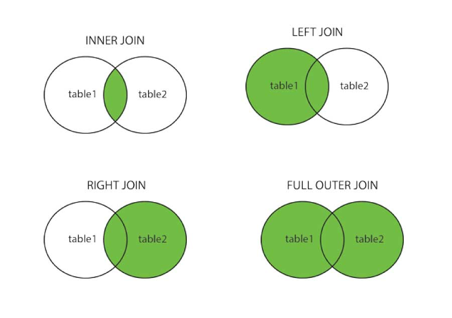

── Attaching core tidyverse packages ──────────────────────── tidyverse 2.0.0 ──
✔ dplyr 1.1.4 ✔ readr 2.1.5
✔ forcats 1.0.0 ✔ stringr 1.5.1
✔ ggplot2 4.0.0 ✔ tibble 3.3.0
✔ lubridate 1.9.4 ✔ tidyr 1.3.1
✔ purrr 1.1.0
── Conflicts ────────────────────────────────────────── tidyverse_conflicts() ──
✖ dplyr::filter() masks stats::filter()
✖ dplyr::lag() masks stats::lag()
ℹ Use the conflicted package (<http://conflicted.r-lib.org/>) to force all conflicts to become errors
library(dplyr)
Joins
We will be interested in cross-referencing data across two tables. Joins allow us to access this information.
It is important that in both databases there is an ID column. Each row needs to have a unique ID. If you don’t have one, you can make one.
inner_join(): only records that exist in both table1 and table2 will survive.
full_join(): keeps all records in both tables.
left_join(): keeps all the records of the first table, and looks for which ones have id also in the second one (in case of not having it, it fills with NA the fields of the 2nd table). The “left” is what comes before the pipe in the operation.
right_join(): keeps all records in the second table, and searches which ones have id also in the first one. The “left” is still what comes before the pipe in the operation. Usually, you use left join.

band_members |>left_join(band_instruments, by ="name") # if the columns have the same name, you can just specify one. If they have the same name and you don't specify, the system will assume that will be the key column.
# A tibble: 3 × 3
name band plays
<chr> <chr> <chr>
1 Mick Stones <NA>
2 John Beatles guitar
3 Paul Beatles bass
band_members |>right_join(band_instruments, by ="name") # reverses table
# A tibble: 3 × 3
name band plays
<chr> <chr> <chr>
1 John Beatles guitar
2 Paul Beatles bass
3 Keith <NA> guitar
band_members |>inner_join(band_instruments, by ="name") #two rows, only contains overlapping information
# A tibble: 2 × 3
name band plays
<chr> <chr> <chr>
1 John Beatles guitar
2 Paul Beatles bass
band_members |>full_join(band_instruments, by ="name")
# A tibble: 4 × 3
name band plays
<chr> <chr> <chr>
1 Mick Stones <NA>
2 John Beatles guitar
3 Paul Beatles bass
4 Keith <NA> guitar
What happens if the key column does not have the same name?
# A tibble: 16 × 2
carrier name
<chr> <chr>
1 9E Endeavor Air Inc.
2 AA American Airlines Inc.
3 AS Alaska Airlines Inc.
4 B6 JetBlue Airways
5 DL Delta Air Lines Inc.
6 EV ExpressJet Airlines Inc.
7 F9 Frontier Airlines Inc.
8 FL AirTran Airways Corporation
9 HA Hawaiian Airlines Inc.
10 MQ Envoy Air
11 OO SkyWest Airlines Inc.
12 UA United Air Lines Inc.
13 US US Airways Inc.
14 VX Virgin America
15 WN Southwest Airlines Co.
16 YV Mesa Airlines Inc.
planes
# A tibble: 3,322 × 9
tailnum year type manufacturer model engines seats speed engine
<chr> <int> <chr> <chr> <chr> <int> <int> <int> <chr>
1 N10156 2004 Fixed wing multi… EMBRAER EMB-… 2 55 NA Turbo…
2 N102UW 1998 Fixed wing multi… AIRBUS INDU… A320… 2 182 NA Turbo…
3 N103US 1999 Fixed wing multi… AIRBUS INDU… A320… 2 182 NA Turbo…
4 N104UW 1999 Fixed wing multi… AIRBUS INDU… A320… 2 182 NA Turbo…
5 N10575 2002 Fixed wing multi… EMBRAER EMB-… 2 55 NA Turbo…
6 N105UW 1999 Fixed wing multi… AIRBUS INDU… A320… 2 182 NA Turbo…
7 N107US 1999 Fixed wing multi… AIRBUS INDU… A320… 2 182 NA Turbo…
8 N108UW 1999 Fixed wing multi… AIRBUS INDU… A320… 2 182 NA Turbo…
9 N109UW 1999 Fixed wing multi… AIRBUS INDU… A320… 2 182 NA Turbo…
10 N110UW 1999 Fixed wing multi… AIRBUS INDU… A320… 2 182 NA Turbo…
# ℹ 3,312 more rows
airports
# A tibble: 1,458 × 8
faa name lat lon alt tz dst tzone
<chr> <chr> <dbl> <dbl> <dbl> <dbl> <chr> <chr>
1 04G Lansdowne Airport 41.1 -80.6 1044 -5 A America/…
2 06A Moton Field Municipal Airport 32.5 -85.7 264 -6 A America/…
3 06C Schaumburg Regional 42.0 -88.1 801 -6 A America/…
4 06N Randall Airport 41.4 -74.4 523 -5 A America/…
5 09J Jekyll Island Airport 31.1 -81.4 11 -5 A America/…
6 0A9 Elizabethton Municipal Airport 36.4 -82.2 1593 -5 A America/…
7 0G6 Williams County Airport 41.5 -84.5 730 -5 A America/…
8 0G7 Finger Lakes Regional Airport 42.9 -76.8 492 -5 A America/…
9 0P2 Shoestring Aviation Airfield 39.8 -76.6 1000 -5 U America/…
10 0S9 Jefferson County Intl 48.1 -123. 108 -8 A America/…
# ℹ 1,448 more rows
From package {nycflights13} incorporates into the flights table the airline data in airlines. We want to maintain all flight records, adding the airline information to the airlines table.
join1 <- flights |>left_join(airlines, by ="carrier")join1
To the table obtained from the crossing of the previous section, include the data of the aircraft in planes, but including only those flights for which we have information on their aircraft (and vice versa).
join2 <- join1 |>inner_join(planes, by ="tailnum")join2
By default, if two tables have the same variable name, but do not represent the same concept, tibble will add .x for columns that come from the first table and .y for columns that come from the second table.
Repeat the previous exercise but keeping both year variables (in one is the year of flight, in the other is the year of construction of the aircraft), and distinguishing them from each other
join3 <- join1 |>inner_join(planes, by ="tailnum", suffix =c("_flight", "_manufact"))join3
“_flight” would apply to all columns from table 1 that need a suffix (replacing .x) and “_manufact” would apply to all columns from table 2 that need a suffix (replacing .y). Regardless of which column in the table, they receive the same treatment.
To the table obtained from the previous exercise includes the longitude and latitude of the airports in airports, distinguishing between the latitude/longitude of the airport at destination and at origin.
join4 <- join3 |>left_join(airports |>select(faa, lat, lon),by =c("origin"="faa")) |>rename(lat_origin = lat, lon_origin = lon) |>left_join(airports |>select(faa, lat, lon),by =c("dest"="faa")) |>rename(lat_dest = lat, lon_dest = lon)